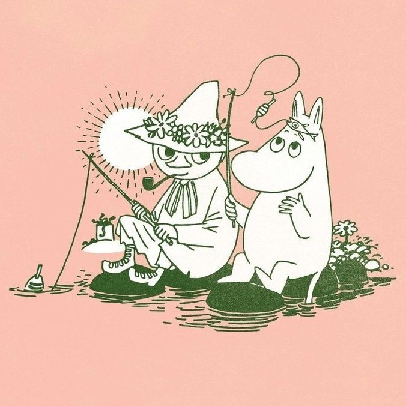

Click to explore more!
Click to explore more!
Television
Moomin has appeared in several television adaptations, each with its own distinct visual style. From hand-drawn 2D animation to modern digital rendering, the shows maintain a cozy, storybook feel with soft colors and expressive characters. Popular series include the 1990s “Moomin” anime, which introduced the characters to a global audience, and the recent “Moominvalley” series, which uses detailed CGI while preserving the charm and warmth of the original world.
 Click to explore more!
Click to explore more!
Film
Moomin films bring the world of Moominvalley to life through soft, atmospheric animation and gentle storytelling. Visually, they often use painterly backgrounds, muted pastel colors, and slow, dreamlike pacing that reflects the tone of the original stories. Some of the most well-known examples include “Comet in Moominland” and “Moomins on the Riviera,” both of which translate the books into cinematic adventures while keeping their quiet, whimsical mood.

Click to explore more!Books
The Moomin stories began as a series of novels written and illustrated by Tove Jansson in the 1940s. Known for their philosophical tone, gentle humor, and emotional depth, the books explore themes of family, nature, and individuality. Although the original series is complete, the books continue to be published, translated, and read worldwide, remaining the foundation of all Moomin media and storytelling.
 Click to explore more!
Click to explore more!
Comics
Moomin comics expand the world of Moominvalley through a more playful and episodic format. Originally created by Tove Jansson and later continued with her brother Lars Jansson, the comics combine simple, expressive linework with witty and sometimes satirical storytelling. Published in newspapers worldwide, these comics became one of the most widely distributed comic strips of their time, bringing Moomin stories to an even broader audience.
 Click to explore more!
Click to explore more!
Upcoming Movie
A new Moomin film is currently in development, continuing the tradition of reimagining Moominvalley for modern audiences. While details are still emerging, the project is expected to blend contemporary animation techniques with the soft, nostalgic aesthetic that defines the series. Like previous adaptations, the upcoming film aims to capture the emotional warmth, quiet humor, and sense of wonder that make Moomin stories timeless.